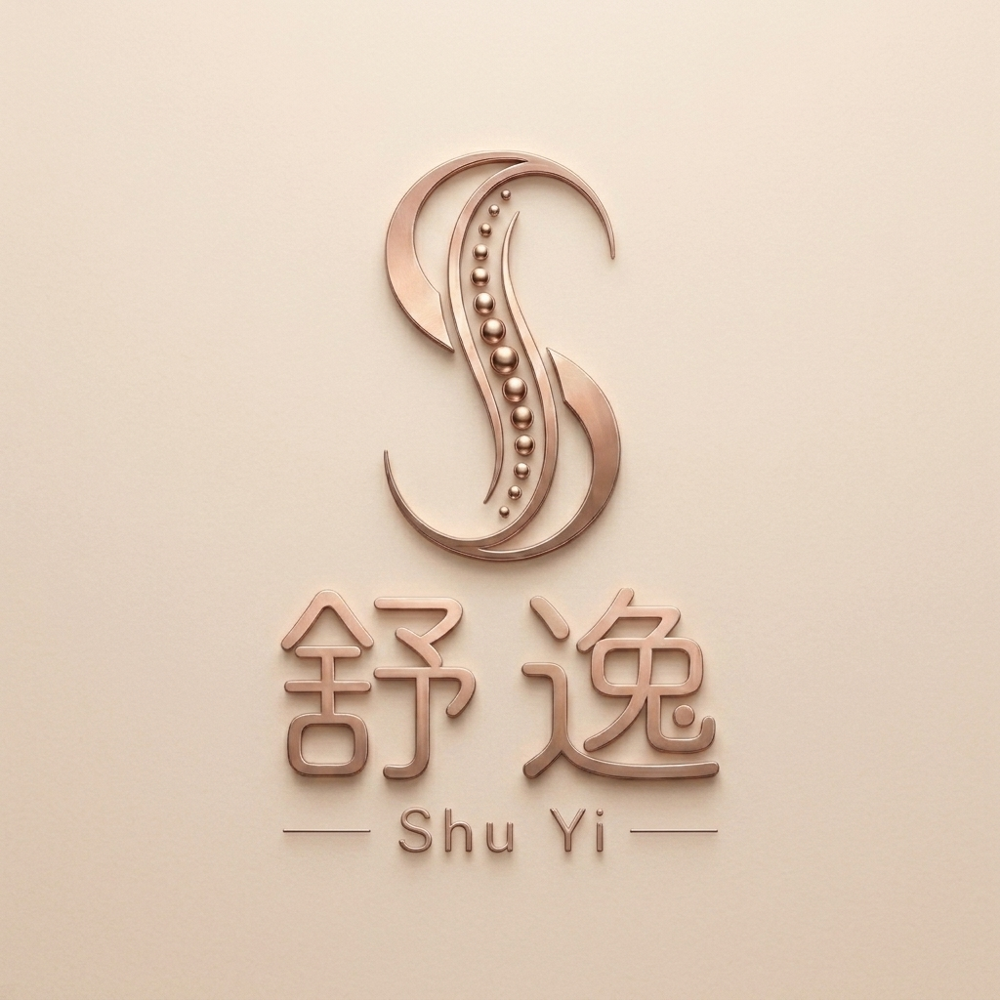

LAYOUT SAMPLE · NOT A LIVE OFFER
第一次來舒逸
第一次預約前，先留一點時間了解服務方式，再依當天的身體感受安排適合的照顧。
- 活動內容
- 初次到訪體驗提案
- 活動期間
- 日期待確認
- 適用方式
- 正式內容待確認

SHU YITHE SHU YI WAY 01
舒逸以美式活化槍為核心，依身體當下的感受與日常活動安排調理；不套用制式流程，也不把它稱為按摩。
以美式活化槍為核心，先了解你當下的身體感受、日常活動與工作習慣，再透過分段檢查與觀察，安排此次調理。
每個人的狀態不同，服務採預約制，依當次狀況安排，不套用同一套固定流程。
LAYOUT SAMPLE · NOT A LIVE OFFER
第一次預約前，先留一點時間了解服務方式，再依當天的身體感受安排適合的照顧。
LAYOUT SAMPLE · NOT A LIVE OFFER
為平日忙碌的生活留一個休息空間，選擇適合自己的部位與時段。
LAYOUT SAMPLE · NOT A LIVE OFFER
如果想規律安排服務，可以先了解現有多次方案，再依自己的步調選擇。